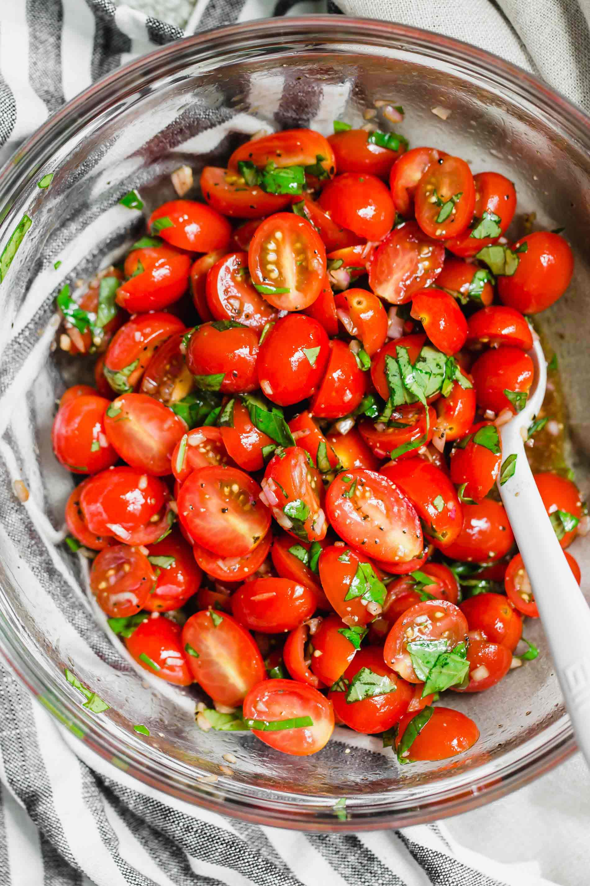

Tomato Salad

Description
We have a surplus of tomatoes this summer, and it’s glorious. I dreamed up this simple tomato salad recipe to make use of the excess. I simply sliced ripe tomatoes into bite-sized pieces, then I added some crisp red onion, lots of fresh basil, and drizzled it all with olive oil and good balsamic vinegar.
The end result is so delicious! This salad really lets raw, peak-season tomatoes shine. The recipe is also quite versatile, so you’ll never tire of it. Try adding some cucumber, mozzarella, avocado, arugula or even peaches.
Serve this tomato salad as a fresh, healthy side salad to any summer meal. It’s best when it’s freshly made, so I recommend cutting the recipe in half if you’re not serving a crowd.
Ingeridents
- Tomatoes
- Fresh Basil
- Red Onion
- Extra-Virgin Olive Oil & Thick Balsamic Vinegar
- Salt & Pepper
Steps
- First, fill a small bowl with ice water and add the chopped red onion (soaking the onion will tame its intense flavor and make it more crisp). Set aside as you prep the remaining ingredients.
- To assemble the salad, spread the tomato wedges over a large serving platter. Drain the onions well, and layer about one-third of the onions on top. Add half of the cherry tomatoes, followed by a layer of any optional additions, followed by another one-third of the onions. Finish with the remaining cherry tomatoes, followed by the remaining onions, and sprinkle the basil all over.
- Drizzle the olive oil over the salad, followed by the balsamic vinegar. Sprinkle the salt and several twists of black pepper on top. Serve promptly. This salad is best consumed within a couple of hours, but leftover salad will keep in the refrigerator, covered, for 3 days.